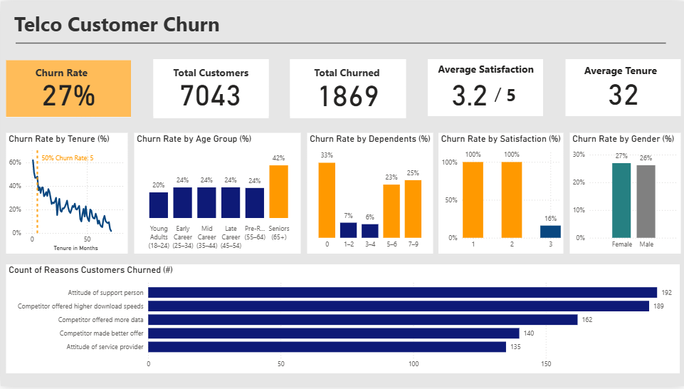

Customer Retention Strategies
After all the predicting and analysis, we can now strategize how to retain as many customers as possible.
Customer Retention Strategies
To create effective customer retention strategies, one needs to understand why customers leave. Then, this can help the business focus on strategies that can help keep customers engaged, satisfied, and loyal.
The most common way to understand why customers end up discontinuing their service with a company is most commonly done by collecting feedback. This can be done using reviews, surveys, and more.
In addition, customer churn models can also be applied to help identify patterns, in which we did create. From our model, we learn that churn is affected by the services the company provides, the number of dependents, and more.
Top Reasons Customers Leave
We can also analyze the dashboard we built earlier and consider the top five reasons customers choose to walk away:
- The attitude of the support person.
- The competitor offers higher download speeds.
- The competitor offered more data.
- Competitors made better offers in general.
- The attitude of the service provider.
Based on these survey answers, we can categorize the top five reasons into two main ones: the customers didn’t like the customer service assistant's attitude and competitors had better offers.
Additional Insights from Dashboard
- Customers who choose this company are more likely to leave, by 50% within the first five months.
- Seniors have a 42% churn rate out of the other age groups.
- Singles and large families (with 5–9 dependents) are more likely to leave.
- Those with super low satisfaction scores (1–2) have a 100% churn rate.
- No gender is more inclined to churn than the other.
Knowing that these are the reasons, as well as the demographics of who are more likely to churn, we can now better target these groups at risk and devise customer retention strategies.
Proposed Retention Strategies
- Improve Customer Support: Address the attitude of support personnel by training staff in empathy. Monitor the quality of customer service calls to boost customer satisfaction.
- Counter Competitive Offers: Stay aware of competitors’ deals and provide better packages (e.g., faster speeds and more data).
- First Five Months Strategy: Since churn is high early on, offer special deals or perks during the first five months.
- Support for Seniors: Offer senior-friendly plans that include simple tech support, easy navigation, and loyalty rewards.
- Customized Family & Solo Plans: Provide bundled offers for families and loyalty-based perks for individuals.
- Ongoing Feedback Collection: Send surveys twice a month to track customer satisfaction and pinpoint areas for improvement.
Conclusion
In conclusion, we can learn a lot from data. From that data, we can create action plans to help promote businesses and more.